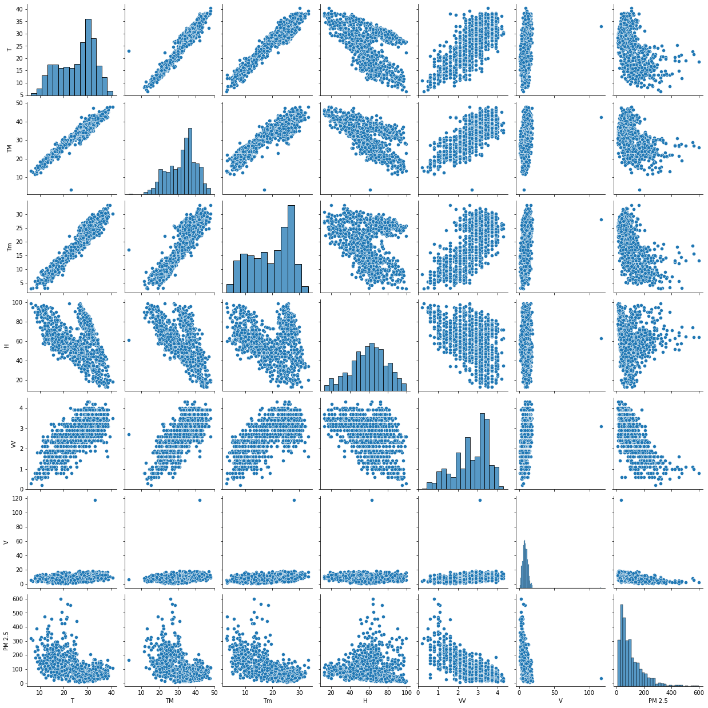
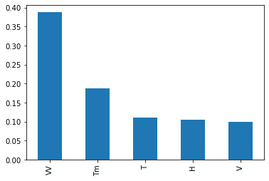
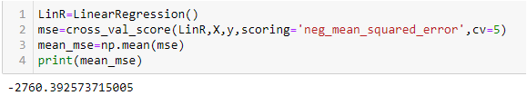

AIR QUALITY INDEX
The Air Quality Index (AQI) is used for reporting daily air quality. It tells us how clean or polluted air is.
The AQI is calculated based on the average concentration of a particular pollutant measured over a standard time interval (24 hours for most pollutants, 8 hours for carbon monoxide and ozone).
For example, the AQI for PM2.5 is based on 24-hour average concentration

How AQI is influenced by Climatic Conditions.
Climate change influences air as ambient air pollutants are very sensitive to meteorological conditions.
Air quality is strongly dependent on weather and is therefore sensitive to climate change.
Recent studies have provided estimates of this climate effect through correlations of air quality with meteorological variables.
How is air pollution affected by weather depends-- some types of pollution are worse in the summer heat, while others are worse in cold winter weather.
The same atmospheric conditions that create weather-- air pressure, temperature, and humidity-- also affect air quality.
Because of climate warming, the Earth experiences more extreme weather, such as heat waves and drought, which can negatively Impact air quality.
Purpose/Idea
The Purpose of this project is to use Meteorological variables for past years data for a and use them to predict the Air Quality Index of a particular pollutant of a Particular region.
Data Sources
To predict the air quality index of a particular region , we need the
pollutant concentration of a particular pollutant (PM 2.5 AQI) which will be available in the cpcb.nic.in website,
Historical Metereological Data which will be collected from website en.tutiempo.net/
Techniques
Feature engineering
Supervised Learning Algorithms (Linear Regression Lasso and Ridge Regression Decision Tree Regressor KNN Regressor Random Forest Regressor)
Targets
BY MIDWAY Collection of Data, Preprocess the Data Apply Different Supervised algorithms and Identify which works best
AFTER MIDWAY Suggest possible improvements Report Writing
Expected Results
The model should be capable for successfully predicting the air quality index of a total county or any state or any bounded region provided with the Metereological Data
Relevant papers
Effect of climate change on air quality Daniel J. Jacob a,*, Darrell A. Winner b a School of Engineering and Applied Science, Harvard University, Cambridge, MA, USA bOffice of Research & Development, U.S. Environmental Protection Agency, Washington, DC, USA
link
Climate Change is Threatening Air Quality across the Country
Published: July 30th, 2019
Research brief by Climate Central
link
RESEARCH ARTICLE Impacts of climate change on future air quality and human health in China
Analysis of related papers..
Effect of climate change on air quality Daniel J. Jacob a,*, Darrell A. Winner b a School of Engineering and Applied Science, Harvard University, Cambridge, MA, USA bOffice of Research & Development, U.S. Environmental Protection Agency, Washington, DC, USA
link
It reviewed current knowledge of the effect of climate change on air quality with focus on 21st-century projections for ozone and particulate matter (PM).It studied observed correlations of ozone and PM with meteorological variables. The two air pollutants of most concern for public health are surface ozone and particulate matter, and they are the focus of the review. It was observed that correlations of PM concentrations with meteorological variables are weaker than for ozone
Climate Change is Threatening Air Quality across the Country
Published: July 30th, 2019
Research brief by Climate Central
https://www.climatecentral.org/news/climate-change-is-threatening-air-quality-across-the-country-2019
Climate Central analyzed summer high temperatures and used data from the NOAA/NCEI Air Stagnation Index, which incorporates upper atmospheric winds, surface winds, and precipitation to identify the number of stagnant days in a month.
The same atmospheric conditions that create weather-- air pressure, temperature, and humidity-- also affect air quality.
The analysis showed a positive correlation between summer maximum temperatures and the number of summer stagnant days.
As the climate warms, stagnant days are projected to increase further, with up to 40 more days per year by late-century.
And stagnation impacts air quality. When the air is stagnant, pollutants react together in the heat and sun, and high concentrations of ground-level ozone can build up.
RESEARCH ARTICLE
Impacts of climate change on future air quality and human health in China
This paper presents correlation analyses between changes in ozone and PM2.5 concentrations and these meteorological variables. that the increase in ozone concentrations is generally associated with the increase in temperature and the decrease in precipitation, while the increase in PM2.5 concentrations is generally associated with the decrease in boundary layer height and wind speed.
Creating Dataset
The Pollutant data was available from 2018 onwards and downloaded from cpcb website
The meteorological variables were webscrapped from https://en.tutiempo.net/
To collect the meteorological variables data Html file of website was webscrapped .
Then Using beautiful soup html data was written into a csv Format

Data was cleaned (removing null values, removing empty rows)
And AQI data was combined to form final dataset.

Visualising Data
Dataset was first imported , and checked for null values in Dataframe, and remove the null values.


Divide dataset into dependent and independent features

Pairwise relationships in the dataset were visualised . The pairplot function was used to creates a grid of Axes such that each variable in data will by shared in the y-axis across a single row and in the x-axis across a single column.
And pairwise correlation of all columns in the dataframe found using df.corr()

Feature Importance
Feature importance refers to a class of techniques for assigning scores to input features to a predictive model that indicates the relative importance of each feature when making a prediction.
Feature importance scores can be calculated for problems that involve predicting a numerical value, called regression, and those problems that involve predicting a class label, called classification.
The higher the score more important or relevant is the feature towards your output variable.
Feature importance is an inbuilt class that comes with Tree Based Regressor I used Extra Tree Regressor for extracting required features for the dataset.



Linear Regression
Since the dataset contains more than one independent feature thus it uses multiple linear regression.
Build the Linear regression model

Predict Dependent variables(2.5 AQI)

Evaluate model by finding R-Squared value is also known as the Coefficient of Determination. The value of R-Squared ranges from 0 to 1.The higher the R-Squared value of a model, the better is the model fitting on the data.
However, if the R-Squared value is very close to 1, then there is a possibility of model overfitting, which should be avoided. A good model should have an R-Squared above 0.8.

We get R-Squared value close to 7
Ridge Regression
Steps
Build the Linear regression model
We generally use a scorer object with the scoring parameter in the cross_val_score function. All scorer objects follow the convention that higher return values are better than lower return values.
Thus metrics which measure the distance between the model and the data, like metrics.mean_squared_error, are available as neg_mean_squared_error which return the negated value of the metric.
here we have mse=-2760.392573715005

Try if we could make our model better by hyper tuning it using Ridge Regression.
in Ridege Regression we have taken the alpha(λ-parameter) value as a bunch of possible random values. We are doing GridSearch to find the best parameters which will work for the Ridge Regressor.
Here also the value for the scoring parameter will be neg_mean_squared_error which measures the distance between
the model and the data.
The formula for Ridge Regression is:


Lasso Regression
Steps
Build the Linear regression model.
We use a scorer object with the scoring parameter in the cross_val_score function. All scorer objects follow the convention that higher return values are better than lower return values. Thus metrics which measure the distance between the model and the data, like metrics.mean_squared_error, are available as neg_mean_squared_error which return the negated value of the metric. Here we have mse=-2760.392573715005
We try to make our model better by hyper tuning it using Lasso Regression. in Ridege Regression we have taken the alpha(λ-parameter) value as a bunch of possible random values. We are doing GridSearch to find the best parameters which will work for the Lasso Regressor. Here also the value for the scoring parameter will be neg_mean_squared_error which measures the distance between the model and the data
After hypertuning we get score as -2760.3925738642843.
Evaluation Metrices
Mean Absolute Error: 34.31529029728029
Mean Square Error: 2203.686005695834
Root Mean Square Error: 46.94343410633519
K-Nearest Neighbour
Build the K-Nearest Neighbour model
We Evaluate model by finding R-Squared value i.e Coefficient of Determination.
We get R-Squared value for training Data=1.0
We get R-Squared value for testing Data=0.3820085833313066
Evaluation Metrices
Mean Absolute Error: 36.720977777777776
Mean Square Error: 3100.9031288126985
Root Mean Square Error: 55.68575337384508
Random Forest Regressor
Random Forest Regression is a supervised learning algorithm that uses ensemble learning method for
regression. Ensemble learning method is a technique that combines predictions from multiple machine
learning algorithms to make a more accurate prediction than a single model.It is a meta estimator that
fits a number of classifying decision trees on various sub-samples of the dataset and uses averaging to
improve the predictive accuracy and control over-fitting.
We Evaluate model by finding R-Squared value i.e Coefficient of Determination.
We get R-Squared value for training Data=0.9729739075719985
We get R-Squared value for testing Data=0.7540440934165676
We get mean cross valdation score =0.6815096950121835
We also perform a Randomized Search and get mean score =-1888.5427588856328
Evaluation Metrices
Mean Absolute Error: 19.898582014790176
Mean Square Error: 835.6375956118613
Root Mean Square Error: 28.907396901344494
XG Boost Regressor
XGBoost stands for “Extreme Gradient Boosting”. XGBoost is an optimized distributed gradient boosting
library designed to be highly efficient, flexible and portable. It implements Machine Learning algorithms
under the Gradient Boosting framework.
It provides a parallel tree boosting to solve many data science problems in a fast and accurate way.
We Evaluate model by finding R-Squared value i.e Coefficient of Determination.
We get R-Squared value for training Data=0.9995968643939962
We get R-Squared value for testing Data=0.7247784976953502
We get mean cross valdation score =0.6548830137132338
We also perform a Randomized Search and get mean score =-1952.6997222489085
Evaluation Metrices
Mean Absolute Error: 7.676428318689741
Mean Square Error: 133.2822014854206
Root Mean Square Error: 11.544791097521886
Improvements
From the Final dataset A feature was completely deleted as not enough Records for the feature were available .
For improving the model I calculated the average of the available records of the deleted feature and used function fillna() to fill all empty cells of that feature with the calculated average value.
When I Re Run all algorithms with the new dataset and could find minor improvements.
Linear regression
R-Squared value
Before Modifications
We get R-Squared value for training Data=0.6819162365647814
We get R-Squared value for testing Data=0.6938412145242896
After Modifications
We get R-Squared value for training Data=0.6819215499319956
We get R-Squared value for testing Data=0.6939168889550285
Evaluation Metrices Before Modifications
Mean Absolute Error: 34.42900945054323
Mean Square Error: 2244.444176498912
Root Mean Square Error: 47.37556518395228
Evaluation Metrices After Modifications
Mean Absolute Error: 34.42704370859507
Mean Square Error: 2243.8894087005046
Root Mean Square Error: 47.36970982284465
Ridge Regression
Mean Cross validation Score Before Modifications =-2760.392573715005
Mean Cross validation Score After Modifications =-2768.2974430691675
After Hypertuning
Mean Cross validation Score Before Modifications =-2760.3925737150103
Mean Cross validation Score After Modifications =-2768.297443069173
Evaluation Metrices Before Modifications
Mean Absolute Error: 34.31529029706646
Mean Square Error: 2203.6860057132244
Root Mean Square Error: 46.94343410652042
Evaluation Metrices After Modifications
Mean Absolute Error: 34.307877465585314
Mean Square Error: 2202.34877434467
Root Mean Square Error: 46.929188937639545
Lasso Regression
Mean Cross validation Score Before Modifications =-2760.392573715005
Mean Cross validation Score After Modifications =-2760.392573715005
After Hypertuning
Mean Cross validation Score Before Modifications =2760.3925738642843
Mean Cross validation Score After Modifications =-2768.2974432297224
Evaluation Metrices Before Modifications
Mean Absolute Error: 34.31529029728029
Mean Square Error:2203.686005695834
Root Mean Square Error: 46.94343410633519
Evaluation Metrices After Modifications
Mean Absolute Error: 34.30787746579477
Mean Square Error: 2202.348774324336
Root Mean Square Error: 46.9291889374229
K-Nearest Neighbour
R-Squared value
Before Modifications
We get R-Squared value for training Data=1.0
We get R-Squared value for testing Data=0.3820085833313066
After Modifications
We get R-Squared value for training Data=1.0
We get R-Squared value for testing Data=0.39331751605005005
After Hypertuning
Mean Cross validation Score Before Modifications =0.21544843109832443
Mean Cross validation Score After Modifications =0.21707626193332777
Evaluation Metrices Before Modifications
Mean Absolute Error: 36.720977777777776
Mean Square Error:3100.9031288126985
Root Mean Square Error: 55.68575337384508
Evaluation Metrices After Modifications
Mean Absolute Error: 36.69868571428571
Mean Square Error:3084.7406758730162
Root Mean Square Error: 55.540441804805766
Results
After trying all these Supervised algorithms we can say that Xg Boost and Random Forest Regressor give the best performance.